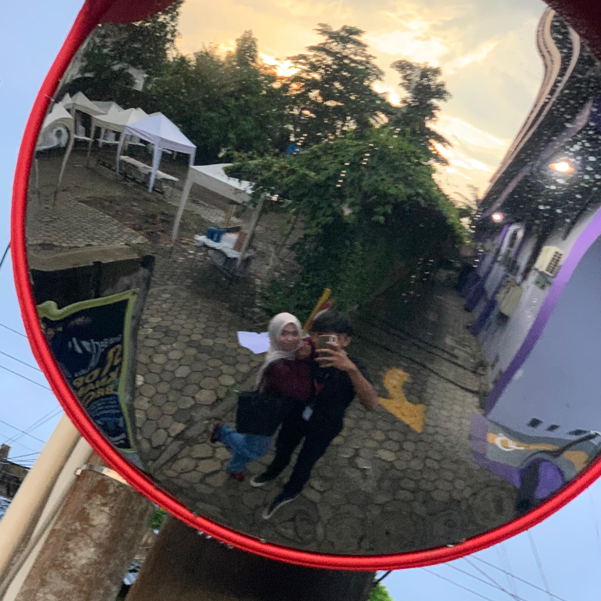

Marhayuning Mustika Galih Kinasih
Today is ur birthday, right? Have a great birthday!
I always pray for the best for u. Semoga semesta selalu memihakmu dan mempermudah setiap
jalan menuju masa depan cerah yang kamu impikan. Aku akan selalu bangga atas setiap proses yang sudah kamu lalui untuk lebih berkembang.
I will always support u from afar.
FYI aku ucapin di website karena biar ga langsung keliatan orangg lain tau, terus malu jugaa kalo alay. emm by the way, aku saranin buka pake mode dekstop kalo ngga pake tab yaa, biar liatnya lebih enak hehe. oiya, maaf ya cuma bisa kasih kado ini, dan itupun juga buat websitenya masii kurang bagus. makasii juga udaa di izinin masuk sec acc buat nyari foto/videomu hehe,terus jugaa buat sorotan aku tau kamu masi post sorotan yang tengah (video dibawah ini) yang foto di laptop aku itu karena kamu suka aja kan itu foto kamu, juga masuknya sorotan kenangan di sekolah tp sebenernya aku kepedean sendiri si seneng aja kalo liat video itu lagii. (kalo bisa abis ini jangan dihapus yaa itu sorotannya terus jangan jauhin aca). na tau, sebenernya aku pengin ajakkin na main tau pengen chattan juga tapi ga pd ajaa takut ganggu pastinya,dah ya segitu duluu semoga sukaa dan nerima dengan senang hati.
tysm

Barasuara